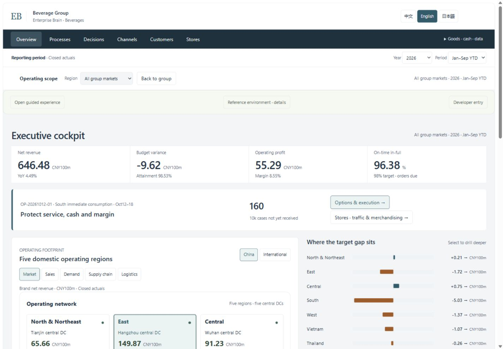
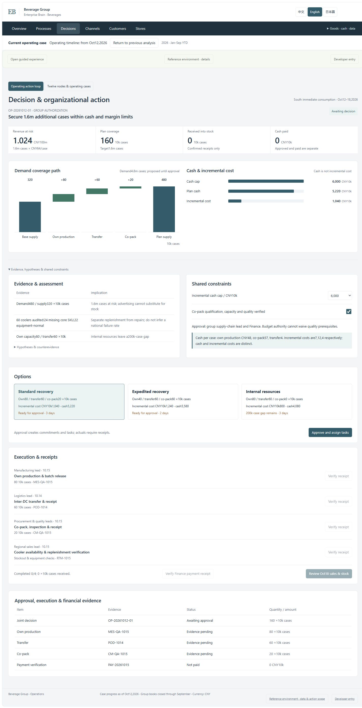
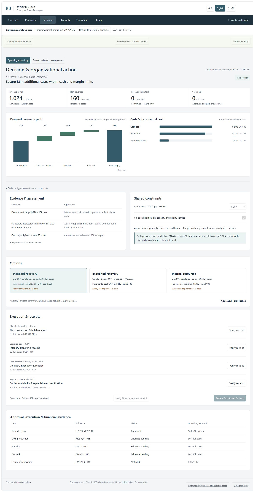
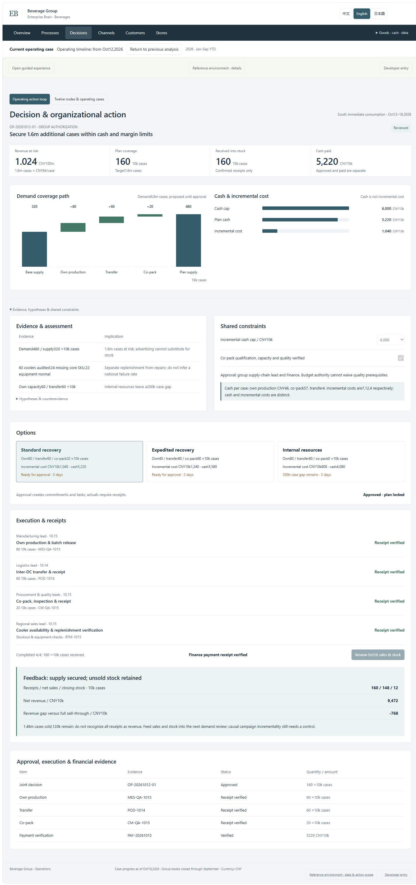
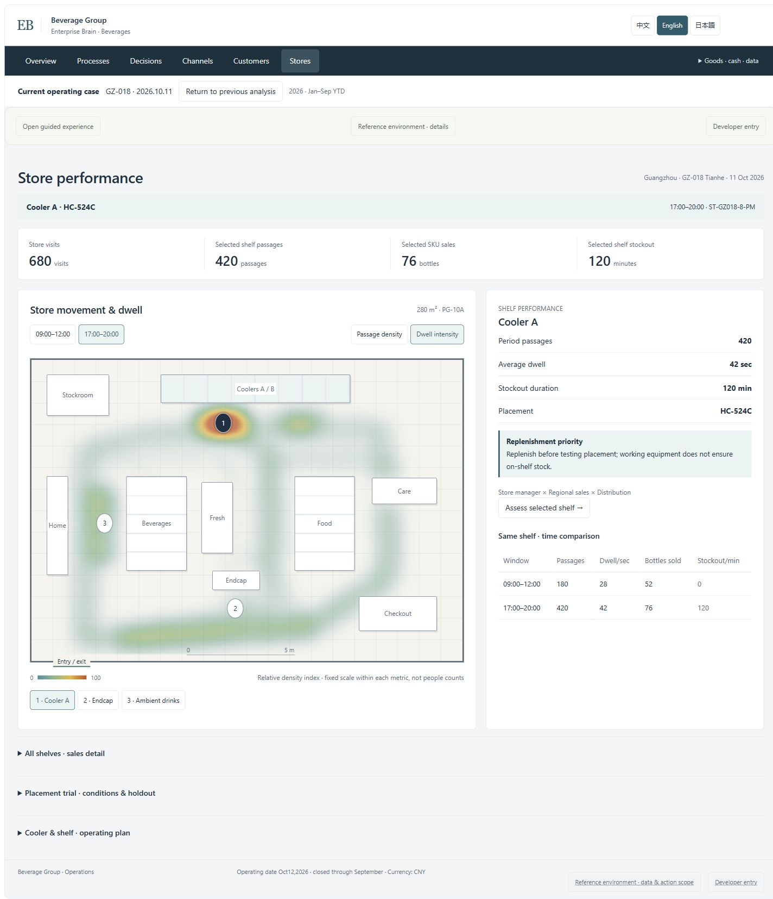

Enterprise Brain · Operating case
Open interactive workspace / 打开交互工作台 / ワークスペース
Actual page captures, constructed local case; no live enterprise or model. Captioned capture sequence, not a continuous screen recording.
实际页面截图回放，构造案例，不连接真实企业或模型，不是连续录屏。
実画面キャプチャーの説明映像。構成例であり、実企業やモデルへの接続、連続録画ではありません。
English scope · 中文说明 · 日本語の説明
01 · Fifteen business areas in one operating landscape
同一经营蓝图中的15个业务域 · 一つの経営全体像に15の業務領域View full-resolution capture / 查看完整画面 / 全画面

区域经营、需求、供应与履约 · 地域経営・需要・供給・履行View full-resolution capture / 查看完整画面 / 全画面

在现金与质量约束下比较方案 · 現金と品質の制約で案を比較View full-resolution capture / 查看完整画面 / 全画面

明确批准后锁定方案 · 明示的な承認で計画を固定View full-resolution capture / 查看完整画面 / 全画面

核对回执、付款、销售和剩余库存 · 実行証跡・支払・販売・在庫を照合View full-resolution capture / 查看完整画面 / 全画面

门店客流、冷藏可得性与货位经营 · 店舗動線・冷蔵在庫・棚の業績View full-resolution capture / 查看完整画面 / 全画面
